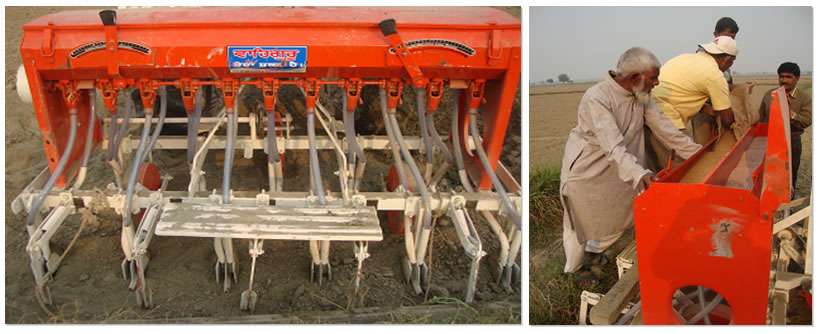
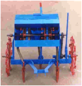

FMP 211 :: Lecture 08 :: SOWING METHODS - SEED DRILLS, SEED CUM FERTILIZER DRILLS - COMPONENTS AND FUNCTIONS

Sowing is an art of placing seeds in the soil to have good germination in the field. A perfect sowing gives
- Correct amount of seed per unit area.
- Correct depth of sowing
- Correct spacing between row-to-row and plant to plant.
- Correct seed rate
SOWING METHODS
(i) Broadcasting (ii) Dibbling (iii) Drilling (iv) Seed dropping behind the plough (v) Transplanting (vi) Hill dropping (vii) Check row planting.
(i) Broadcasting
Broadcasting is the method of random scattering of seeds on the surface of seedbed. It can be done manually or mechanically. When broadcasting is done manually, uniformity of seed placement depends upon the skill of the man scattering the seeds. Soon after broadcasting the seeds are covered by planking or some other devices. Usually higher seed rate is obtained in this system. Mechanical broadcasters are used for large-scale sowing. The device scatters the seeds on the surface of the seedbed at controlled rates.
(ii) Dibbling
Dibbling is the process of placing seeds in holes made in the seedbed and closing the seed with soil. In this method, seeds are placed in holes made at definite depth at fixed spacing. The equipment used for dibbling is called dibbler. It is a conical shape instrument used to make proper holes in the field. Small hand dibblers are made with several conical projections made in a frame (Fig.1). This is very time consuming process, so it is not suitable for small seeds. Mostly vegetables are sown in this way.
| Dibbler |
(iii) Seed dropping behind the plough
It is a very common method of sowing followed by farmers in villages. This method is used for seeds like maize, gram, peas, wheat and barley. A woman/ man walkbehind a plough ploughing the land and drop the seeds in the furrows made by the plough. Sowing behind the plough can be done by a device known as malobansa . It consists of a bamboo tube provided with a funnel shaped mouth. It is fitted to the handle of the plough. One man drops the seeds through the funnel and other man handles the plough and the bullocks. This method is a slow and laborious method.
(iv) Drilling
Drilling consists of dropping the seeds in furrow lines in a continuous stream and covering them with soil. The spacing between the seeds is not uniform. Seed metering may be done either manually or mechanically. The number of rows planted may be one or more (Figs.2-5). This method is very helpful in achieving proper depth of sowing, proper spacing between seeds and proper seed rate. Drilling can be done by using seed drills of tractor drawn and animal drawn types
(v) Transplanting
Transplanting consists of rising the seedlings in a nursery bed and then planting the seedlings in another field (main field). It is commonly done for paddy, vegetable and flowers. It is a time consuming operation. Equipment used for planting the seedlings in the main field is called transplanter.
(vi) Hill dropping
In this method, few seeds are dropped as a hill at a fixed place and not in a continuous stream. The spacing between hill to hill in a row is constant The equipments are called planters
(vii) Check row planting
It is a method of planting, in which row-to-row and plant-to-plant distance is uniform. In this method, seeds are planted precisely along straight parallel furrows. The rows are always in two perpendicular directions. A machine used for check row planting is called check row planter.
SEED DRILL
Seed drill is a machine used for placing the seeds in a continuous stream in furrows at uniform rate and at controlled depth with an arrangement of covering the seeds with soil.
According to the power source used , seed drills may be classified in to (i) Bullock drawn seed drills (ii) Tractor drawn seed drills.. According to the type of seed metering done animal drawn seed drills may be classified into i) manually metered seed drills and ii) mechanically metered seed drill. . In manually metered seed drills a person drops the seeds in the furrows, in mechanically metered seed drills a mechanical device called seed metering mechanism is used to meter the seeds. There are many designs of bullock drawn seed drills and tractor drawn seed drills which are used for sowing..
 |
Seed Drill for Wheat |
|  | |||
| Gorru | Bullock drawn seed drill | Tractor drawn seed drills | Tractor drawn seed drills |
Functions of a seed drill:
Seed drill performs the following functions
- To carry the seeds.
- To open furrows at uniform depths
- To meter the seeds
- Todeposite the seeds in furrows in an acceptable pattern
- To cover the seeds and compact the soil around the seed.
SEED CUM FERTILIZER DRILL
Seed drills fitted with fertilizer dropping attachments are called seed-cum-fertilizer drills, They deliver both the seeds and fertilizers simultaneously in an acceptable pattern. Seed cum fertilizer drill has a large seed box which is divided lengthwise into two compartments, one for seed and another for fertilizers distribution.
Functions of a seed cum fertilizer drill :
Seed cum fertilizer drill performs the following functions
- To carry the seeds and fertilizer in separate compartments.
- To open furrows at uniform depths
- To meter the seeds and fertilizers
- To deposit the seed and fertilizer in the furrows in an acceptable pattern
- To cover the seed and fertilizer and compact the soil around the seed.
Seed-cum-fertilizer drill
COMPONENTS OF A SEED DRILL
A seed drill with mechanical seed metering device mainly consists of:
(i) Frame (ii) Seed box (iii) Seed metering mechanism (iv)drive transmission system v) Furrow openers (vi) Covering device (vii) clutch viii) hitch frame and ix) Transport wheels.
Frame
The frame is usually made of mild steel angle section and flats . It is strong enough to withstand all types of loads in working condition. All other parts of a seed drill are fitted to the frame
Seed box
It is a box like structure made up of either mild steel or galvanized iron and provided with a lid. In some designs a small agitator is provided at the bottom of the box which agitates the seeds while the drill in operation and prevents clogging of seeds. Seed metering mechanism is placed at the bottom of the box.
Seed metering mechanism
The mechanism which picks up seeds from the seed box and delivers them in to the seed tube is called seed metering mechanism. Seed metering mechanism may be of several types: (a) Fluted feed type (b) Internal double run type (c) Cup feed type (d) Cell feed type (e) Brush feed type (f) Auger feed type (g) Picker wheel type and (h) Star wheel type. Usually seed metering mechanism is provided at the bottom of the box.
Drive transmission system
The drive transmission mechanism consists of a wheel, sprocket-chain assembly and a driven shaft thatcarry the seed picking discs. When the seed drill moves in the field, the drive wheel rotates due to its contact with soil and the sprocket wheel also rotes. The chain connecting the drive wheel sprocket and driven wheel sprocket rotates the shaft carrying the seed metering discs.
Furrow openers
These are the parts which open up furrows in the soil for placing the seeds. Different types of furrow openers in use namely 1. Hoe type 2. Shoe type 3. Stub runner type 4. Full or curved runner type 5. Single disc type 5. Double disc type etc. In cultivator type seed drills the tines work as furrow openers.
Covering device or furrow closer
It is a device which closes the furrow with soil after the seed has been dropped in it. Covering the seeds is usually done by chains, bars, packers, rollers or press wheels, designed in various shapes and .sizes
Transport wheel
There are two wheels fitted on an axle for transporting the drill on roads. Iron wheels are used as transport wheels . Some manufacturers use pneumatic wheels. One of the transport wheels is fitted with a suitable attachment to transmit the motion of the wheel to the seed metering mechanism when the drill is in operation.
TYPES OF SEED METERING MECHANISMS
Some of the seed metering mechanisms used in seed drills are explained here.
(a) Fluted feed type
The fluted wheel also known as fluted roller is driven by a square shaft. There are horizontal groves provided along the outer periphery of the wheel and wheel can be shifted sideways depending upon the seed rate. These rollers are mounted at the bottom of the seed box. They receive the seeds in the longitudinal groves and pass on to the seed tube through the seed hole.
 |
 |
 |
b) Internal double run type
The internal double run feed mechanism has a double face wheel. One face has a larger opening for course seeds while other face has smaller openings for small seeds. Flapper gate is provided at the bottom of the box which covers the opening not in use. The rate of seeding is controlled by changing the speed of the internal feed wheels. This is done by meshing appropriate gears.

Internal double run
(c) Cup feed mechanism
The mechanism consists of a circular shaft mounted with many circular discs. Each disc is provided with several cups or spoons in a circular path...This arrangement is kept at the bottom of the seed box. When the shaft rotates, the discs also rotates. Seeds are picked up by the cups and then dropped in to a funnel from where the seeds travel through the seed tube and reach the furrows. The cups have two faces, one for larger seeds and the other for smaller seeds
| Fig 8. Cup feed mechanism | |
(d) Cell feed mechanism - It is a mechanism in which seeds are collected and delivered by a series of equally spaced cells engraved on the periphery of a circular plate or wheel.
(e) Brush feed mechanism - It is a mechanism in which a rotating brush regulates the flow of seed from the hopper in to the seed tube. A number of bullock drawn planters in the country use brush feed mechanism.
(g) Picker wheel mechanism - It is a mechanism in which a vertical plate provided with radially projected arms picks up and drop the seeds in to the furrow. It is suialble for large size seeds like potatoes..
(h) Star wheel mechanism - It is a feed mechanism which consists of a toothed wheel, rotating in a horizontal plane and conveying the fertilizer through a feed gate below the Star wheel.
(f) Auger feed mechanism - It consists of an auger which moves the substance from the container and delivers in to the field uniformly. Fertilizer drills are usually provided with auger feed mechanism. Some manufacturers use this mechanism in seed drills also.
TYPES OF FURROW OPENERS
The furrow openers are provided in a seed drill for opening a furrow. The seeds travel through the seed tube and reach the furrow
Different type of furrow openers are: in use (1) Shovel type (2) Shoe type (3) hoe type 4) Disc Type (single disc, double disc).etc
(1) Shovel Type
Shovel type furrow openers are widely used in seed drills. There are three types of shovels in use. They are: (a) reversible shovel (b) single point shovel and (c) spear head shovel.
Shovel type openers are best suited for stony and root infested fields. The shovels are bolted to the shanks at their bottoms. Boots are fitted at the back of the shovels which carry the delivery ends of the seed tubes. In cultivator type seed drills shovel type furrow openers are used.
(2) Shoe Type
It works well in trashy soils where the seed beds are not smoothly prepared. They are made from two flat pieces of steel welded together to from a cutting edge. It is specially suited for black soils. Bullock drawn three tyne seed drills are provided with shoe type furrow openers.
(3) Disc Type
They are two types: (a) Single disc and (b) Double disc types.
Single disc type
Disc type furrow openers are suitable to fields where plant residues or trashes are used as mulches. It consists of a curved disc made of hardened steel. It is set at an angle which while working shifts the soil to one side making a small furrow. Seeds are placed in the furrows. The disc is kept clean by two scrapers, one toe shaped at the convex side and one ‘T’ shaped at the concave side. It works well in sticky soils also, but the discs are costly and maintenance is bit difficult.
Double disc type
In double disc furrow opener there are two flat discs, set at an angle to each other. The discs open a clean furrow and leave a small ridge in the center. The seeds are dropped between the two discs, providing more accurate placement. It is suitable for trashy lands. Seed drills operated at high speeds, usually use this type of furrow openers.
Seed tube - Seed tubes are provided at the lower end of the feed cups. They conduct seeds from feed cups to the furrow lines through suitable boots and furrow openers Polypropylene, rubber and steel tubes are used as seed tubes.. Minimum diameter of seed and fertilizer tube is 25 mm.Boot - It is a part of the sowing equipment which receives the seeds or fertilizers from the seed tube and delivers to the furrow. It is made up of cast iron or mild steel.
TYPES OF FURROW CLOSERS
Drag chain, drag bars, scraper blades, steel press wheels, zero- pressure pneumatic press wheels, disc hillers and various combination of these are used as furrow closers
PLANTER
Planter is a sowing equipment used for sowing those seeds which are larger in size and can not be handled by seed drills. Row to row and plant to plant spacing is maintained in a planter. Potato planter, maize planter , cotton planter are popularly used
Functions of a planter:
(i) to open the furrow
(ii) to meter the seed
(iii) to deposit the seed in the furrow
(iv) to cover the seed and compact the soil over the seed.
Components of a planter:
A planter consists of: (i) hopper
(ii) feed metering device
(iii) knock out mechanism
(iv) cut-off mechanism
(v) furrow opener
(vi) furrow closer
(vii) Drive mechanism (viii) clutch etc..
A planter has separate seed hopper for each row. Hopper is usually made of mild steel or any other suitable material.
Seed metering device in a planter: There are a number of seed metering devices available for use in a planter. The most common device is a rotating circular plate with cells which is provided at the bottom of seed hoppers. In some planters, vertical rotors , inclined rotors , canvas belts are also used The circular seed plates have notches or holes provided along the periphery called cells which pick up the seeds from seed hopper and drop them in to the seed tube. Depending upon the type of notches provided on the plates, the rotor is further classified in to. (i) Edge drop (ii) Flat drop and (iii) Hill drop rotors. The cells carry the seeds in the cells of the rotor. The flat drop cell carries the seed on a platform of thickness half of the cell depth. Only one seed is allowed in the cell each time. In hill drop rotor, the cells are larger in size and admit many seeds at a time.
The rotating plate receives the seeds from the hopper. The plate moves under an arrangement called cut-off which allows only those seeds which are accommodated in the cells.
Cut-off mechanism: It cuts-off or brushes out or removes the excess seeds carried away by the cells thus allowing corrected number of seeds for delivery.
Knock out mechanism: It is a device which knocks out the seeds from the rotor cells . It consists of rollers or star wheels which by pressure releases the seeds from the cells. Seeds fall in to the seed tube and reach the furrow.
Spacing of seeds or hills: The spacing of seeds or hills in the row is determined by the ratio of peripheral speed of the rotor to the forward speed of the planter and the spacing between the cells in the rotor.
The accuracy of the planter depends upon several factors such as: (i) speed of seed plate (ii) shape and size of cells (iii) shape of hopper bottom and (iv) uniformity of seed size.
POTATO PLANTER
Potato is an important crop in India. It requires a lot of labour for sowing in the fields. Potato planter have two types of potato dropping mechanisms namely i.) automatic and ii). Semi-automatic
POTATO PLANTER (AUTOMATIC SEED DROPPING)
The automatic potato planter consists of a hopper for each row and cups with chain drive mechanism. The graded potatoes are picked up by the cups and carried to furrow opener spout and released in the furrows. A feeder roller connected to the compensating tray which carrying spare potatoes checks up each cup. If a cup is found empty, a potato is released from compensating tray ensuring uniform seed spacing with no missing .The fertiliser and pesticide can also be placed simultaneously. It can plant in 2-4 rows. Capacity is 6000- 14000 potatoes /hr
POTATO PLANTER ( SEMI-AUTOMATIC)
It is used for planting of potatoes. The semi automatic potato planter consists of a hopper , metering disc and furrow openers. The fertilizer application unit can be attached separately. The potatoes from the hopper are placed in the metering disc which contains several compartments. The metering disc is rotated by gear drive mechanism. The ridges are formed by the furrow openers .The potatoes drop in the furrows due to gravity. It may plant in 2-4 rows. Field capacity is 0.15-0.35 ha/hr
CALIBRATION OF SEED DRILL
Laboratory testing of a seed drill to determine the rate of seed delivery is called calibration of a seed drill. This is done to ascertain whether a seed drill delivers the seed in accordance with the recommended seed rate or not. If any discrepancy is found between seed delivery of the drill and the recommended seed rate, then the seed metering mechanism is adjusted to deliver correct seed rate. This method avoids the difficulty of setting the seed delivery rate of the seed drill in actual field conditions.
Procedure
i. Determine the width of sowing of seed drill (W)
W = M x S, metre
Where, M = number of furrow openers
S = Spacing between the furrow openers, meter
- Find the length of the strip of land (L) for an area of 1/25 ha taking the width of sowing as cover 1/25 ha
L = (1 /25) x 10000 m2) x 1/ w , meter
= 400/W
iii. Determine the number of revolutions (N) of the ground wheel of the seed drill required to cover a strip of length L meter
L = P x D x N = 400/W metre
N = 400 P x D / W revolutions per
minute
iv. Jack the seed drill so that the drive wheel turn freely. Make a mark on the drive wheel and a corresponding mark at a convenient place on the body of the drill to help counting the revolutions of the drive wheel
v. Fill the seed in the seed hopper. Place a container under each boot for collecting the seeds dropped from the hopper
vi. Set the seed rate control adjustment for maximum position and mark this position on the control for reference
- Engage the clutch and rotate the ground wheel for N revolutions
( N = 400 Π D / W)
viii. Weigh the quantity of seed collected in the container and record the observation Ws kg
ix. Calculate the seed rate in kg/ha
Calculation:
Seed collected for an area of 400 m2 = Ws kg
Seed rate per hectare = kg/ha
x. If the calculated seed rate is higher or lower than the desired rate of selected crop, repeat the process by adjusting the seed rate control adjustment till the desired seed rate is obtained.
SOLVED EXAMPLES
1. Calculate the cost of sowing one hectare of land with a bullock drawn seed drill of size 5 x 22 cm. The speed of bullocks is 3 km/hr. Hire charge for bullocks is Rs.100/- per pair/ day, hire charge for seed drill is Rs.50 /- per day and wages for operator is Rs.100/- per day of 8 hours.
Sol: Width of seed drill = 5x22 = 110 cm = 1.1 m
Area covered, FCT =
Time taken to cover one hectare = 1/FCT = 1/0.33 = 3.03 hrs.
Cost of sowing / ha =
2 The following results were obtained while calibrating a seed drill. Calculate the seed rate per hectare.
(i) No. of furrows = 10 (ii) Spacing between furrows = 20 cm (iii) Diameter of drive wheel = 1.5 meter (iv) Revolutions of ground wheel rotated for seed delivery = 500 (v) seed collected = 20 kg.
Solution; width of seed drill = 10 x 20 cm = 2 m
Circumference of drive wheel = Õ x 1.5 m
Area covered in one revolution = Õ x 1.5 x 2 m 2
Area covered in 500 revolution = Õ x 1.5 x 2 x 500 = 4712.3m2
Seed dropped for 500 revolutions= 20 kg
20 x 10000
Seed delivery rate = ------------------- = 42.22 kg / ha.
4712.3
3. Calculate the time required for sowing 1.6 hectares of land by a five furrow seed drill
working at 12.5 cm deep. The speed of seed drill is 3.2 km/hr and pressure exerted by
the soil on the seed drill is 0.42 kg/cm2. The space between furrow openers is 10 cm
and time loss in turning is 10%.
Solution:
width of sowing = 5 x 10 cm = 0. 50 m
Actual Field capacity FCA = = 0.144 ha/h Time needed for sowing 1.6 ha = 1.6 /0.144 = 11.1 h
4. Calculate the seed rate of a 7 x 17 cm seed drill whose main drive wheel diameter is 124 cm and total weight of grain collected in 20 revolutions is 0.423 kg.
Sol. Width of operation = 7 x 17 = 119 cm = 1.19 m
Circumference of main drive wheel = Õ x 1.24 = 3.90 m
Area covered per revolution = 1.19 x 3.9 = 4.64 m
No. of revolutions/ha = = 2155.17 revolutions
Seed collected in 20 revolutions = 0.423 kg
Seed rate of the drill = = 45.58 kg/ha
MODEL QUESTIONS
1. State the requirements of perfect sowing
2. Compare broadcasting with drill sowing
3. Compare check row planting with transplanting
4. What are the functions of a seed drill?
5. State the advantages of using seed drills.
6. List the types of seed metering mechanisms
7. Mention the components of a seed drill with a neat sketch and explain their
importance
8. Differentiate seed drill and seed planter.
9. Mention the different types of furrow openers and their uses.
10. What is calibration of seed drill
11. The following observations are recorded while calibrating the seed drill.
Number of furrows = 10
Spacing between the furrows = 20 cm
Diameter of the ground wheel = 1.5 m
Speed of rotation of ground wheel = 500
Weight of seed collected = 20 kg.
Calculate the seed rate.
12. Seed metering mechanism used in cultivator seed drill is
a. Fluted rollers b. Cup feed mechanism c. Brush feed mechanism
d. Auger feed mechanism
13. In most of the seed drills drive for seed metering mechanism is taken from
a. PTO shaft b. Engine c. Hydraulic system d. Ground wheel
14. A five row 20 cm manual transplanter is pulled at a speed of 1.0 km/h. How
much area will be planted in one day of 8 hours if field efficiency is 80 %
a. 0. 50 ha b. 0.60 ha c. 0.64 ha d. 0.70 ha
15. Knock out mechanism is a device which knocks out the seeds from the cells
Or picker heads of the mechanism. True/False
16. Dropping of seeds in furrow lines in a continuous flow and covering them
with soil is called as
a. Hill dropping b. check row planting c. drilling d. Broadcasting
17. The mechanism used to meter fertilizer in seed cum fertilizer drill is
a. Fluted rollers b. Cup feed mechanism
c. edge drop rotor d. Auger feed mechanism
18. In most of the seed drills drive for seed metering mechanism is taken from
a. PTO shaft b. Engine c. Hydraulic system d. Ground wheel
19. In seed metering mechanisms used in planters the device which knocks out the seeds from the cells is called
a. Fluted rollers b. Cut-off mechanism
c. Knock-out mechanism d. Drive wheel
20. Knock out mechanism in the seed metering system of a planter brushes
out excess seeds from the rotor true/false
21. Calculate the cost of seeding one hectare of land with bullock drawn seed drill of size 5x22 cm. the speed of bullocks is 3 km/h. Hire charges of bullocks is Rs. 150/day.. Hire charges of seed drill is Rs. 100/day. Of 8 hours.
22. A flutted feed seed drill has 8 furrow openers of single disc type. The furrow openers are spaced 25 cm apart and the main drive wheel has a diameter of 120 cm. How many turns of main drive wheel would occur when the seed drill has covered 1.0 ha of land.
| Download this lecture as PDF here |